Sobre Mim
 Curitiba - PR
Curitiba - PR
Sou Matheus Barbosa da Silva e nasci em Curitiba - PR. Desde pequeno, sempre tive curiosidade em entender como as coisas funcionavam. Ao invés de brincar com brinquedos, eu gostava de desmontá-los para descobrir seus mecanismos, principalmente carrinhos de controle remoto e bonecos eletrônicos.
Meu avô, técnico em eletrônica da Philco, tinha uma grande coleção de componentes eletrônicos em casa, como peças de televisores e rádios antigos, o que despertou ainda mais meu interesse pela área. Além disso, meu fascínio por tecnologia começou cedo, quando comecei a explorar no desktop do meu pai, desenhando no Paint e jogando alguns jogos salvos no DVD e nos disquetes.
Minha mãe percebeu minha inclinação para tecnologia e me incentivou a tentar um curso técnico no ensino médio. Assim, ingressei no Instituto Federal do Paraná (IFPR) em 2017. No início, foi um desafio, pois nunca havia estudado matérias técnicas antes, mas com o tempo me adaptei e concluí o curso.
Em 2017, também participei de um projeto de robótica no IFPR, um robô de irrigação inteligente, desenvolvido com peças Lego, sensores de umidade de solo, relés, GPS e motor. O projeto visava otimizar o consumo de água, com um sistema autônomo que acionava a irrigação apenas quando necessário, baseado nos dados obtidos por sensores. Eu e meu grupo apresentamos o trabalho na feira IFTech e JoCIF.
Outro projeto relevante foi desenvolvido no segundo ano do curso, um protótipo de esteira com display contador, utilizando materiais como madeirite, PVC, motor de vidro de carro, circuitos integrados 555 e 4026, LEDs infravermelhos e outros componentes eletrônicos.
Após esses projetos, descobri meu gosto por programação e comecei a me aprofundar nessa área. Essa descoberta me levou a buscar uma faculdade voltada para algoritmos e programação, e em 2021 iniciei o curso de Engenharia da Computação. Durante a universidade, participei de diversos projetos que ampliaram minha visão sobre a tecnologia. Um dos mais marcantes foi o Interruptor por Palmas, no qual desenvolvemos um sistema que permitia ligar e desligar dispositivos eletrônicos com o som de palmas. Outro foi o Carrinho de Polícia com Cockpit de Ativação Remota, um carrinho controlado remotamente com um cockpit para ativar as funcionalidades.
Certificados
Meus certificados e cursos complementares gratuitos que fiz ao longo do tempo. Clique em um certificado para ampliar.
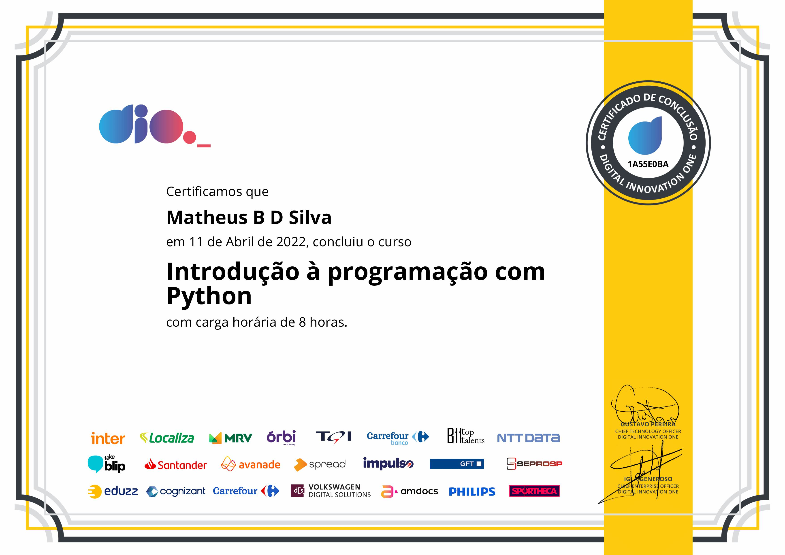
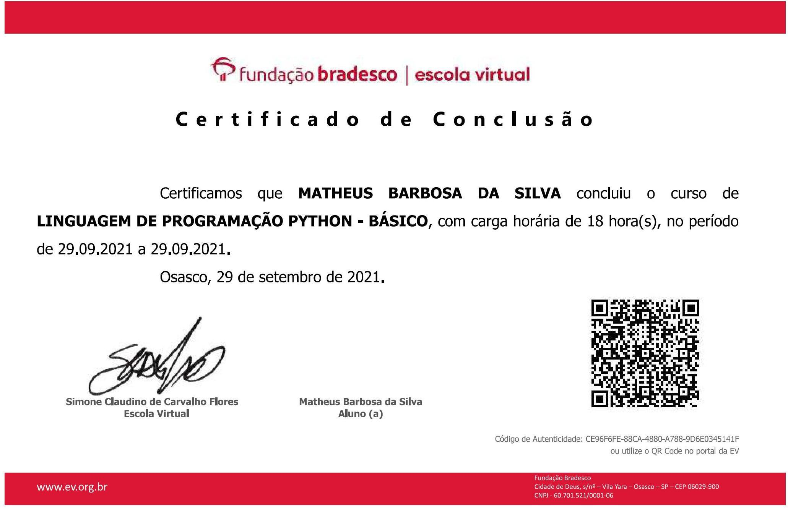
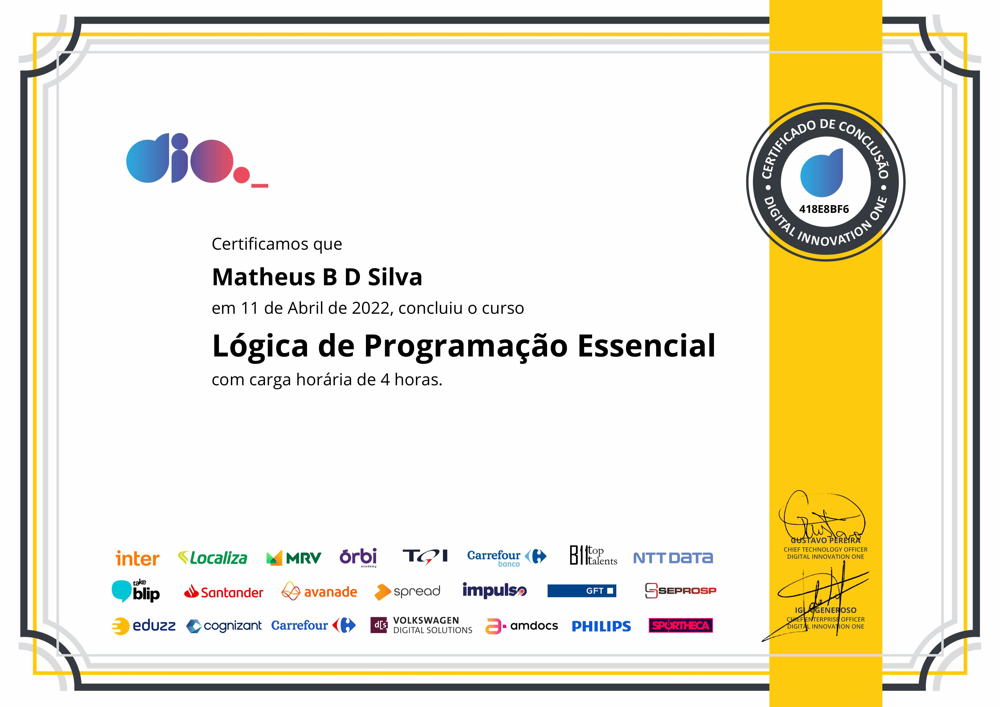
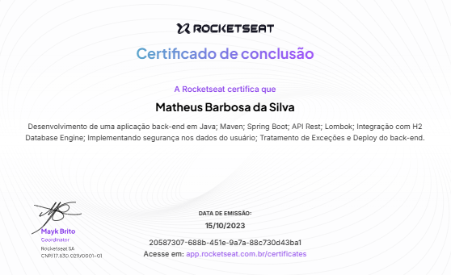
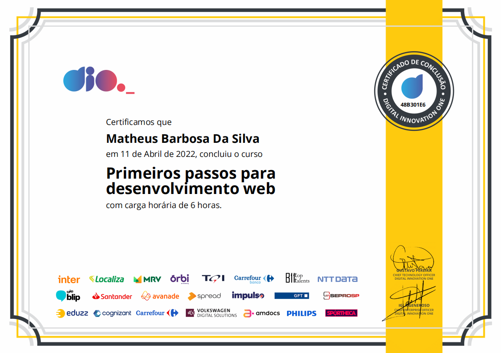
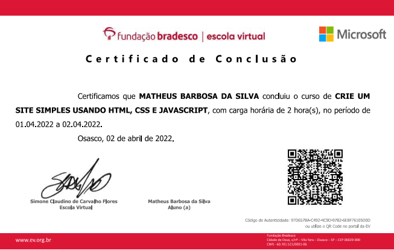
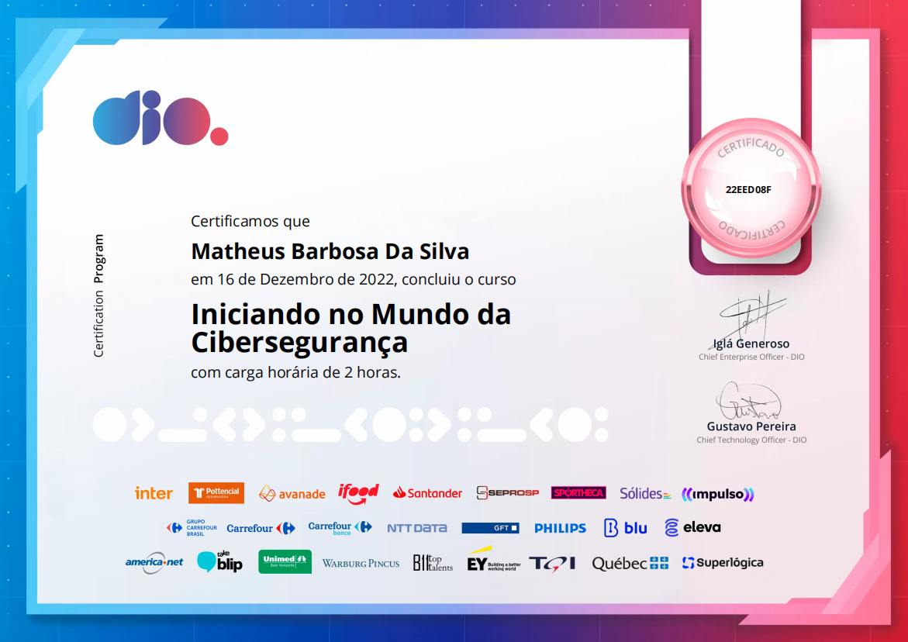
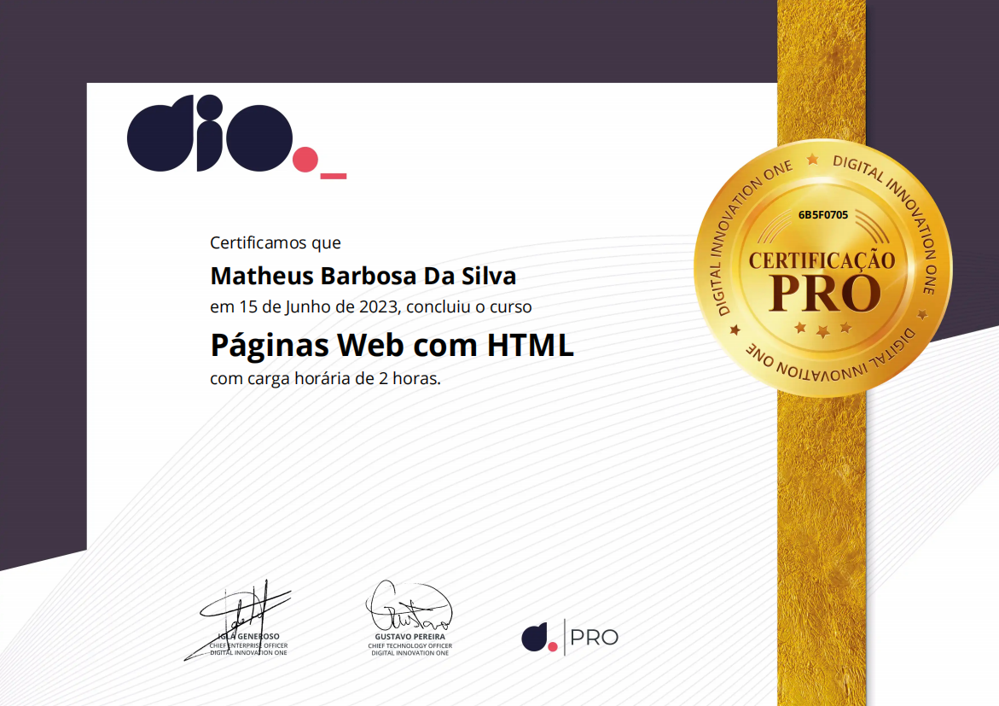
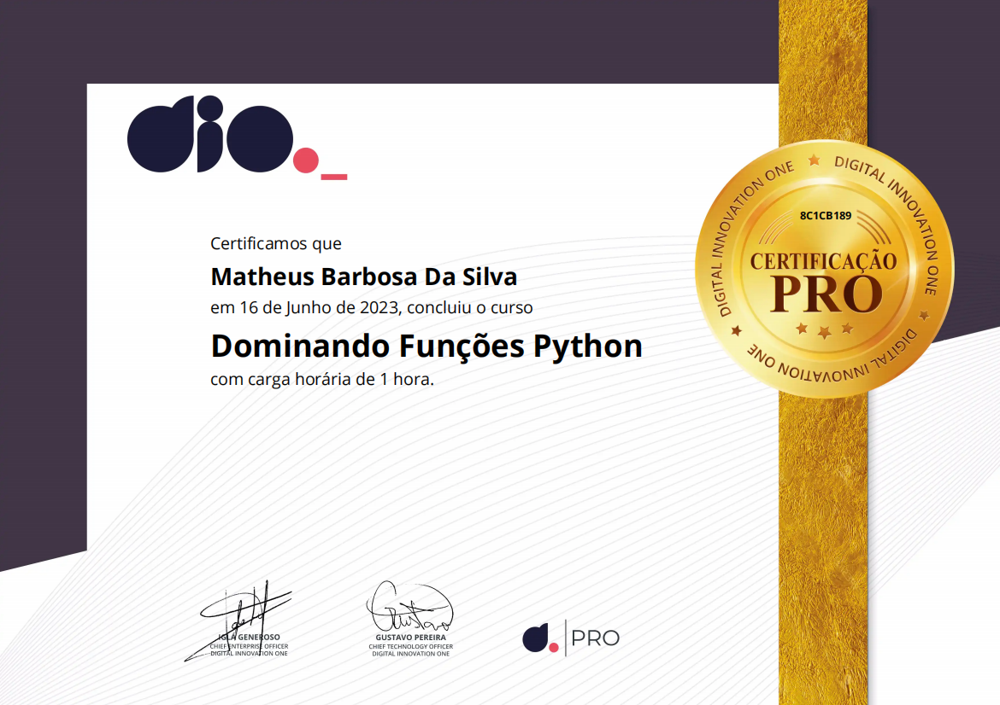
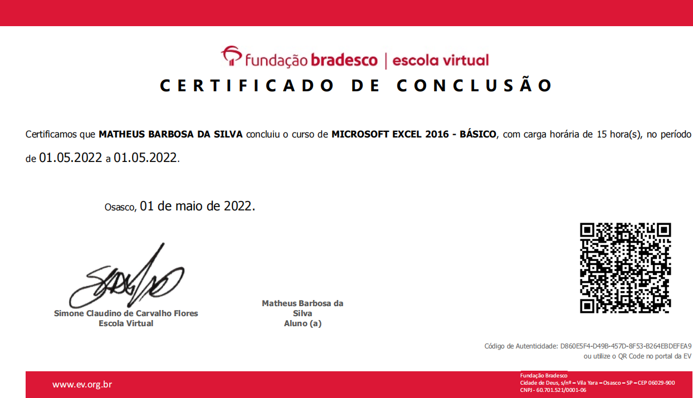
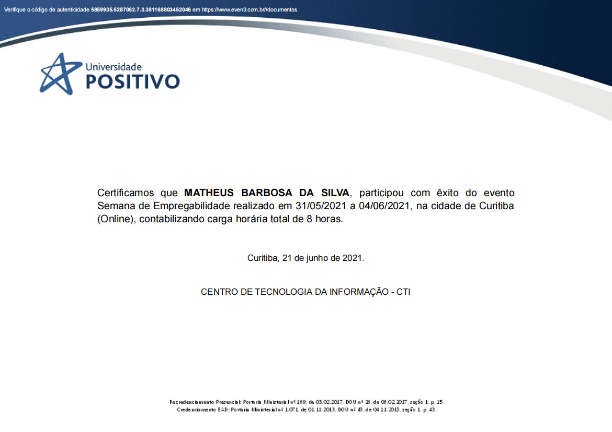